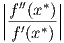

j=1n tais que x
j+1 > xj, ou seja, as
abscissas são distintas e estão em ordem crescente; um spline cúbico que interpola
estes pontos é uma função s(x) com as seguintes propriedades:
j=1n tais que x
j+1 > xj, ou seja, as
abscissas são distintas e estão em ordem crescente; um spline cúbico que interpola
estes pontos é uma função s(x) com as seguintes propriedades:
Dado um conjunto de n pontos j=1n tais que x
j+1 > xj, ou seja, as
abscissas são distintas e estão em ordem crescente; um spline cúbico que interpola
estes pontos é uma função s(x) com as seguintes propriedades:
Da primeira hipótese, escrevemos
![s(x) = sj(x),x ∈ [xj,xj+1], j = 1,...,n − 1](main870x.png)

Veremos que a simples definição de spline produz 4n− 6 equações linearmente independentes:
 |
Como
 | (6.5) |
e
 | (6.6) |
temos, para j = 1,…,n − 1, as seguintes equações
 |
Por simplicidade, definimos

 |
que podem ser escrita da seguinte maneira
 | (6.7) |
 | (6.8) |
Trocando o índice j por j − 1 na terceira equação (6.7), j = 2,…,n − 1
 | (6.10) |
e, portanto,
 | (6.11) |
Fazendo as simplificações, obtemos:
 | (6.12) |
É costumeiro acrescentar a incógnita cn ao sistema. A incógnita cn não está relacionada a nenhum dos polinômios interpoladores. Ela é uma construção artificial que facilita o cálculo dos coeficientes do spline. Portanto, a equação acima pode ser resolvida para j = 2,…,n − 1.
Para determinar unicamente os n coeficientes cn precisamos acrescentar duas equações linearmente independentes às n − 2 equações dadas por (6.12). Essas duas equações adicionais definem o tipo de spline usado.
Uma forma de definir as duas equações adicionais para completar o sistema (6.12) é impor condições de fronteira livres (ou naturais), ou seja,
|
| (6.13) |
Substituindo na equação (6.6)

 | (6.14) |
 | (6.15) |
Observe que a matriz A é diagonal dominante estrita e, portanto, o sistema Ac = z possui solução única. Calculado c, os valores dos an, bn e dn são obtidos diretamente pelas expressões (6.7), (6.9) e (6.8), respectivamente.
Exemplo 6.8.1. Construa um spline cúbico natural que passe pelos pontos (2, 4,5), (5, − 1,9), (9, 0,5) e (12, − 0,5).
Solução. O spline desejado é uma função definida por partes da forma:
|
| (6.16) |
Os coeficientes c1, c2 e c3 resolvem o sistema Ac = z, onde


 |
No Scilab, podemos utilizar:
♢
Alternativamente, para completar o sistema (6.12), podemos impor condições de contorno fixadas, ou seja,
 | (6.17) |
e
 | (6.18) |
Usando as equações (6.8) e (6.9) para j = 1 e j = n − 1, temos:
|
| (6.19) |
e
|
| (6.20) |
Essas duas equações juntamente com as equações (6.12) formam um sistema de n equações Ac = z, onde
 |
 |
Observe que a matriz A é diagonal dominante estrita e, portanto, o sistema Ac = z possui solução única. Calculado c, os valores dos an, bn e dn são obtidos diretamente pelas expressões (6.7), (6.9) e (6.8), respectivamente.
Exemplo 6.8.2. Construa um spline cúbico com fronteira fixada que
interpola a função y = sin(x) nos pontos x = 0, x = , x = π, x =  e
x = 2π.
e
x = 2π.
O spline desejado passa pelos pontos (0,0), (π∕2,1), (π,0), (3π∕2,− 1) e (2π,0) e tem a forma:
 |
Observe que ele satisfaz as condição de contorno f′(0) = cos(0) = 1 e f′(2π) = cos(2π) = 1.
Os coeficientes c1, c2, c3 e c4 resolvem o sistema Ac = z, onde:
 |
 |
Aqui c5 é um coeficiente artificial para o problema. A solução é c1 = −0,0491874, c2 = −0,5956302, c3 = 0, c4 = 0,5956302 e c5 = 0,0491874. Calculamos os demais coeficientes usando as expressões (6.7), (6.9) e (6.8):


 |
No Scilab, podemos resolver este problema fazendo:
Dado um conjunto de pontos (xi,yi), i = 1,2,…,n, um spline cúbico é a seguinte função definida por partes:
 |
Definindo-se hj = xj+1 − xj, os coeficientes cj, j = 1,2,…,n, são solução do sistema linear Ac = z, onde:
![|--------------------------------------|--------------------------------------|
|Spline Natural |Spline Fixado |
| ′′ ′′ | ′ ′ ′ ′ |
|s1(x1) =(-0-e-sn−1(xn) =-0-------------|s1(x1) =(-f-(x1)-e sn−1(xn)-=-f-(xn)---|
| || 1 ,j = i = 1 | || 2h ,j = i = 1 |
| |||| | |||| 1 |
| |||| hi−1 ,j = i− 1,i < n | |||| hi−1 ,j = i− 1 |
| |||| | |||| |
| { 2(hi + hi−1) ,j = i,1 < i < n | { 2(hi + hi− 1) ,j = i,1 < i < n |
|ai,j = || |ai,j = || |
| |||| hi ,j = i+ 1,i > 1 | |||| hi ,j = i+ 1 |
| |||| 1 ,j = i = n | |||| 2hn −1 ,j = i = n |
| |||| | |||| |
| ( 0 ,caso contrário. | ( 0 ,caso contrário. |
| | |
| ( | ( |
| ||| 0 ,i = 1 | ||| 3y2−y1− 3f′(x1) ,i = 1 |
| |{ | |{ h1 |
|zi = | 3yi+1h−i-yi − 3yi−hiyi−−11 ,1 < i < n |zi = | 3yi+h1i−yi− 3yih−iy−i−11 ,1 < i < n |
| |||( | |||( ′ yn−-yn−1- |
|-------0------------------,i =-n------|-------3f-(xn)−-3--hn−1---,i-=-n-------
| |](main915x.png) |
os coeficientes aj, bj e dj, j = 1,2,…,n − 1, são calculados conforme segue: